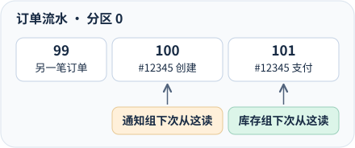
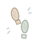

开始学以前，我只听说过 Kafka 这个名字。聊到后来，我还问了一个很实在的问题。「我写代码的时候，到底怎么用它？」就像用 MySQL，要先有个数据库服务在跑，我的程序才有地方连。Kafka 也是一个跑着等程序来连的服务。我的程序可以往里写消息，也可以从里面读消息。
要弄懂什么时候会用它，我还是得回到《Kafka 101》里的订单例子。假如有人买了一双鞋，库存要少一双，通知要发一条。要做的事就这么几件，Kafka 来了以后，究竟帮了什么忙？ 《Kafka 101》
下单成功，为什么还得等通知发完？
假如我写了一个下单接口，代码里先存订单，再叫库存服务扣库存，最后等通知服务发完消息才返回。通知服务要是卡住，用户虽然已经下了单，页面上还在转圈。
加上 Kafka，我可以让订单服务写一条「订单 #12345 已创建」。库存服务读到它，去扣库存。通知服务也读得到这条，去发通知。今天通知服务停了半小时，只要消息还在，它回来以后就能接着读。库存服务可以照常做自己的事。

这里有个我一开始容易想漏的地方。页面上说什么，取决于后台已经做完了什么。 如果后台只是把订单收下了，页面可以显示「订单已受理」。要显示「库存已预留」，就得等系统真的把那双鞋留出来。
一份流水，每组有自己的书签
我当时问，数据库和 Kafka 不都在存东西吗？拿这笔订单来说，我在数据库里查到的是「#12345 现在已支付」。Kafka 的订单流水里，可以先有一条「#12345 已创建」，后面再有一条「#12345 已支付」。当然，得有人把这两条消息写进去，而且它们还在保留期限内。 Apache Kafka 设计文档
那怎么知道一条消息读过了没有？我起初想在消息旁边写个「已处理」。可要是库存已经扣了，通知还没发，这三个字算谁的？
后来我把它想成一条流水和两张书签。流水上的每条消息有自己的位置编号，叫 offset。库存和通知各存各的书签。库存组存下 101，就表示下次从位置 101 接着读。通知组还停在 100，它回来时就从 100 接上。库存读过一遍，通知仍然能读到那条消息。 KafkaConsumer API

为什么要把一个 Topic 切成几个 Partition？
订单越来越多时，一条流水可以拆成几条，各自往后写，也能由不同的程序同时读。整类订单消息有个共同的名字，比如 order-events，这个名字就是 Topic。下面拆出来的每条小流水叫 Partition（分区），各有各的编号。
我当时追问过，直接用 orders-0、orders-1 两个 Topic 来分工，行不行？也能设计出一套这样的系统。只是写业务代码时，库存服务想订阅的就是「订单事件」。如果分成几个 Topic，还得有一套约定，告诉大家哪几个 Topic 是一组，新加一个之后怎么写、怎么读。Kafka 把这两件事分别做了。业务只用认一个 Topic 名字，Kafka 可以在它下面分开存、分开读。 Apache Kafka 设计文档
下一个问题是，轮到订单 #12345 的时候，到底写进哪一条流水？可以把订单号当成 Key，交给默认的有 Key 分区规则来选。只要分区数量和规则保持稳定，这笔订单的「创建」和「支付」会落在同一个分区。别的订单也可能挤进这一条。
同属 order-events | 按该分区里的写入顺序排列 |
|---|---|
| 分区 0 | #12345 创建 → #12347 创建 → #12345 支付 |
| 分区 1 | #12346 创建 → #12346 支付 |
看分区 0，我能说 #12345 的「创建」写在「支付」前面。要判断分区 0 的第一条和分区 1 的第一条谁先写进去，光看两边的位置编号就不够了。Kafka 的顺序是一条流水内部的顺序。 Apache Kafka Producer 配置

开了三个库存程序，谁读哪一条？假设库存服务有三个能干同样工作的程序 A、B、C，我先开 A 和 B。我可以手动规定 A 读分区 0，B 读分区 1。可要是 A 突然挂了，谁来接手？A 回来以后，怎么避免两个人都以为分区 0 归自己？
把这三个程序放进同一个 Consumer Group（消费组），Kafka 就能帮它们分工。在常用的消费组模式下，一个分区同一时刻最多交给组内一个成员。一个成员可以同时接好几个分区。
| 库存组的情况 | 分区 0 | 分区 1 |
|---|---|---|
| A、B 在跑 | A 读 | B 读 |
| A 挂了 | B 接手 | B 继续读 |
| A、B、C 都在跑 | 一种分法是 A 读 | B 读，C 等着 |
程序加入或离开时重新分工，这就是 Rebalance（再均衡）。B 接手时，可以沿用库存组给分区 0 留下的书签。旧式的交接方式会让整组一起停下来重新分，新一些的方式可以让手头工作没变的成员继续读。
通知服务有自己的组。同一组是在分一份工作，不同的组可以各做各的工作。 库存和通知如果用同一个组，Kafka 会把分区分给它们，通知就可能读不到本该通知的订单。 KafkaConsumer API · 消费组再均衡协议
Kafka 里只有一条消息，库存却可能扣两次
这是我觉得最容易想通、也最容易写错的地方。假设鞋还有 10 双，库存程序读到位置 100 的下单消息。它得做两件事，去数据库扣一双鞋，再把书签挪到 101。现在假设程序偏偏在两件事之间挂了。

图里两种结果都来自同一条消息。书签只告诉我接下来从哪儿读。库存到底扣过没有，得问库存自己的数据库。
我可以给每次下单事件一个固定编号，比如 evt-501。库存程序把「扣一双」和「记下已处理 evt-501」放进同一个数据库事务，让这两件事一起成功或一起撤销。用唯一约束保证同一个编号只记一次。这样就算书签还来不及挪，重读时也能查到已经扣过。开发里常说的幂等，放在这里就是重来一遍，库存仍然只扣一次。 Apache Kafka 消息投递语义
我最初问的是更麻烦的情况，银行已经扣钱，支付服务还没写下结果就挂了。银行和我的数据库各管各的。这时要看支付渠道能不能用同一个请求编号重试，或者能不能查到这笔钱已经扣过。Kafka 能把消息再交给我看一遍，实际扣款结果要跟支付渠道确认。
订单存好了，消息还没发出去怎么办？
我把刚才的问题往前挪了一步。订单已经存进数据库，可订单程序刚存完就挂了，没来得及告诉 Kafka。库存服务在 Kafka 里等不到这条消息，它甚至不知道有过这笔订单。
一个办法是在存订单时，顺手往同一个数据库的「待发送」表里也存一行。这两笔一起存成功，或者一起撤销。后台程序再照着这张表发消息。这个做法叫 Outbox（事务发件箱）。
| 谁来做 | 做什么 |
|---|---|
| 订单程序 | 一起存下订单和待发消息 evt-501 |
| 后台发送程序 | 取出 evt-501，发给 Kafka，收到确认后标记为已发送 |
| 库存程序 | 读到 evt-501，根据这个编号判断是否已经扣过 |
如果后台发出消息之后、标记已发送之前挂了，它回来后可能再发一次。所以发件箱和上一节正好能接起来。发件箱让服务重启后还有东西可发，固定的消息编号让库存知道两次读到的是同一件事。 Debezium Outbox 文档
这里还有一种容易混到一起的重试。负责发消息的客户端叫 Producer（生产者）。它通常会把几条消息攒成一批再发，并根据 acks 设置等 Kafka 的写入确认。如果 Kafka 已经写下消息，只是回信丢了，开启生产者幂等后，客户端重试同一次发送时可以避免在 Kafka 里多写一条。应用代码另外调用了一次 send()，Kafka 会把它当成一次新发送。如果两次都写进去了，库存程序还是得靠 evt-501 认出来。 Apache Kafka Producer 配置
如果是 Kafka 自己挂了呢？
前面挂掉的是库存程序或订单程序。Kafka 自己也跑在机器上，每个负责存和提供消息的 Kafka 服务进程叫 Broker。一条流水可以存在两个 Broker 上，一份管写入，一份跟着复制。管写入的叫 Leader，跟着复制的叫 Follower。
| 同一个 Topic | 负责写入 | 跟着复制 |
|---|---|---|
| 分区 0 | Broker 1 | Broker 2 |
| 分区 1 | Broker 2 | Broker 3 |
我当时问，三个 Broker 会不会各自存着所有的分区？看这张表就知道了。Broker 1 只有分区 0，Broker 3 只有分区 1。这里每条流水有两份，这个数叫副本因子。
如果 Broker 2 挂了，分区 0 少了一份备份，分区 1 则失去了负责写入的 Leader。如果 Broker 3 的副本跟得够及时、符合选举条件，它就能接手。前面是库存组在换读消息的人，这里是 Kafka 在换负责接收写入的副本。 Apache Kafka 复制设计
真要用起来，我得启动什么？
现在再回到最开始那个问题。自己在电脑上学时，我可以跑一个 Kafka 容器，用客户端连到 localhost:9092。创建 order-events 之后，我就能开一个终端写一行消息，再开一个终端读。换成真实项目，写的那头是订单代码，读的那头是库存代码。Kafka 是中间那个一直在跑、负责把消息存下来的程序。 Apache Kafka Quickstart
我看旧的 Docker Compose 示例时，还指着 zookeeper 问，它也要单独跑吗？那份旧配置里，确实要跑两个服务。 ZooKeeper 帮旧版 Kafka 管一些集群信息。比如哪个节点在线、由谁负责管理集群。Apache Kafka 从 4.0 开始用自己的 KRaft 模式管理这些信息。我在本地学习时，可以让一个 Kafka 进程既存消息，也负责管理。 Kafka 4.0 升级说明 · KRaft 与 ZooKeeper
我接下来最想自己跑一遍的是那个书签实验。开库存和通知两个组，让它们各自读一条、存下进度。关掉通知组，再往 Kafka 里发几条。看着库存一直往前走，等通知组回来，再看看它是不是从上次停下的地方接上。